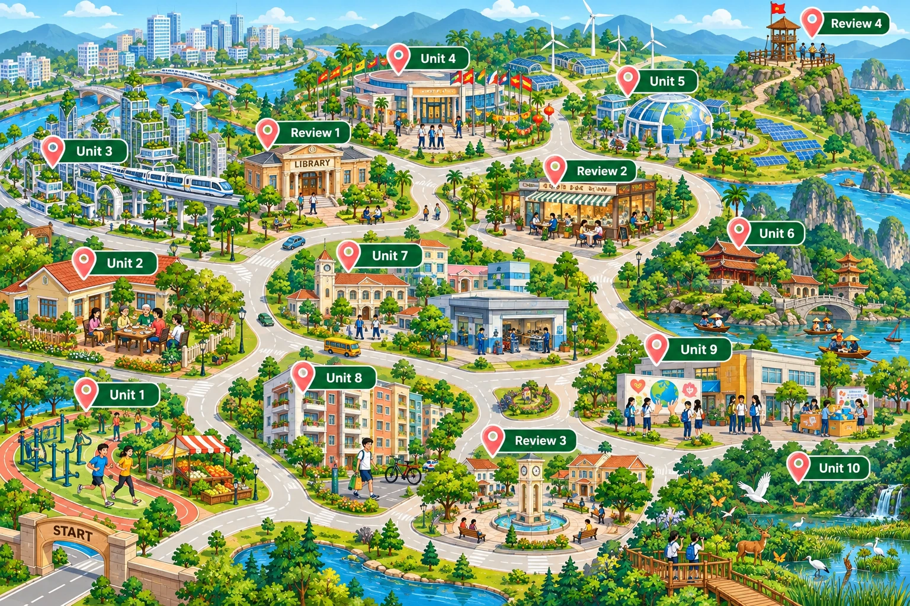

Unit 1 · A Long and Healthy Life Unit 2 · The Generation Gap Unit 3 · Cities of the Future Review 1 · Units 1–3 Unit 4 · ASEAN and Viet Nam Unit 5 · Global Warming Review 2 · Units 4–5 Unit 6 · Preserving Our Heritage Unit 7 · Education Options for School-leavers Unit 8 · Becoming Independent Review 3 · Units 6–8 Unit 9 · Social Issues Unit 10 · The Ecosystem Review 4 · Units 9–10Bấm vào ghim để mở bài giảng ngay trên bản đồ — không rời trang, đóng lại là về đúng chỗ cũ. Bốn ghim Review mở danh sách 3 tiết ôn tập. Trong bài giảng: ← → chuyển slide · F toàn màn hình · A hiện đáp án · Esc lùi một bậc.